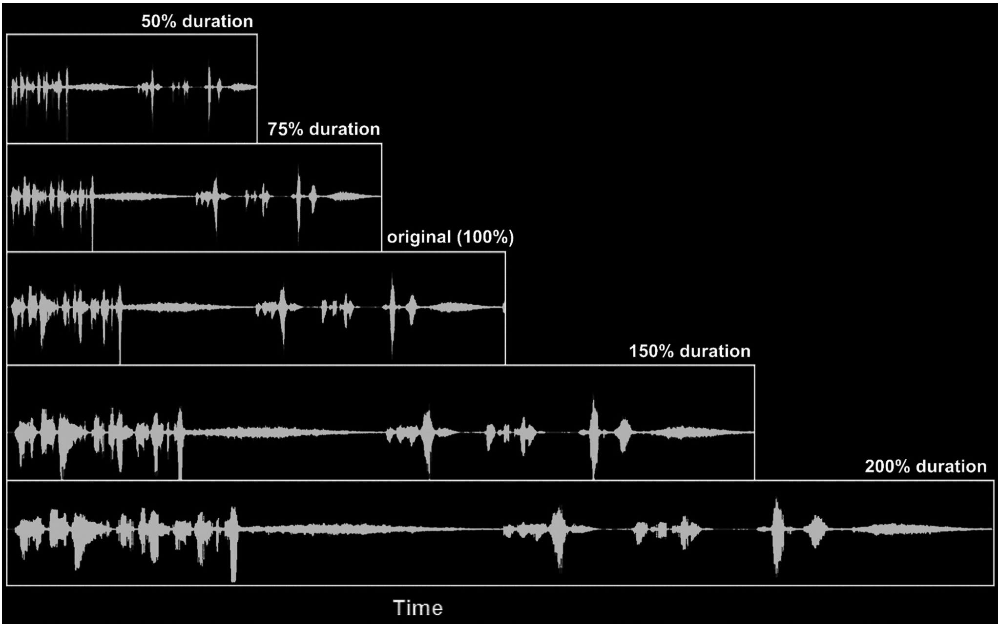
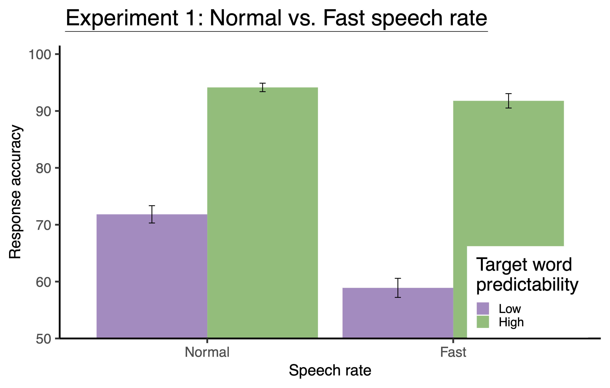
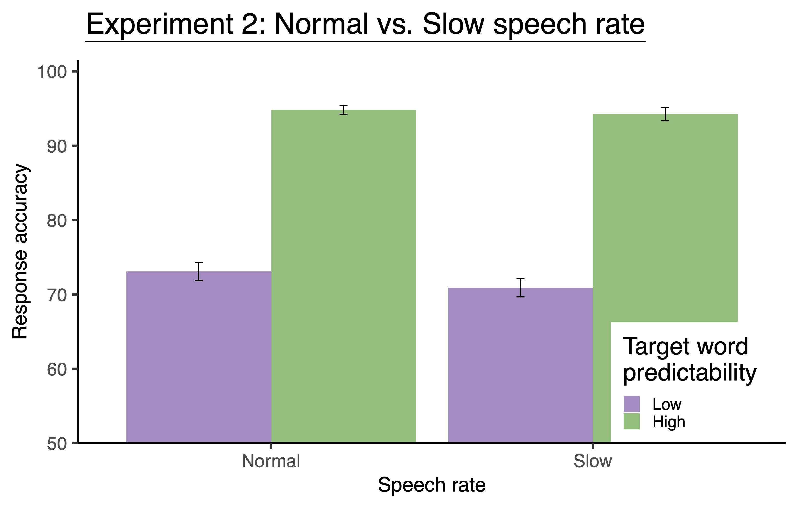

Speaking fast and slow
Do we utilize context better when degraded speech is presented slow?

In previous studies, we found that at a moderate level of speech degradation, listeners use context information that they attend to and use it to form predictions about the word that comes next in a sentence.
Let’s take a very simplified example. Imagine you are speaking to someone over a cellphone, and the signal is poor, which distorts the speech that you hear. It is strenuous. Nonetheless, most of the time, you carry on the conversation successfully. How? You use the information from the context and “predict” what the other person will say next when their speech is moderately distorted, and you are attending to the context.
What would happen if the other person speaks faster or slower than they’d generally speak?
To answer similar questions, we conducted two experiments with two groups of native German speakers. In Experiment 1, they listened to the sentences presented at a normal and fast speech rate (0.65x), while in Experiment 2, they listened to the sentences presented at a normal and slow speech rate (1.35x). Apart from the speed, sentences were identical in both experiments: 120 high and 120 low predictability sentences were presented. For example, Sie findet die Bälle (EN: She finds the balls) is a low predictability sentence, and Sie jonliert die Bälle (EN: She juggles the balls) is a high predictability sentence. We expected that when the speech rate increases (i.e., fast speech), processing demand for degraded speech increases. Furthermore, listeners have lesser time than normal speech to process the context information. Hence, forming predictions is difficult and less efficient. On the other hand, we expected that when the speech rate decreases (i.e., slow speech), the processing demand for degraded speech reduces. Listeners have more time than normal speech to process the unfolding speech, including the context. Hence, the intelligibility of degraded speech increases and the contextual facilitation is amplified compared to the normal speech rate.

| Fixed effects | Estimate | Std. Error | z value | p value |
|---|---|---|---|---|
| Intercept | 1.34 | .24 | 5.58 | <.001 |
| Speech rate (Fast) | -.98 | .24 | -4.16 | <.001 |
| Target word predictability (High) | 2.42 | .28 | 8.55 | <.001 |
| Speech rate x target word predictability | 1.06 | .42 | 2.50 | .012 |
As we had expected, the results of Experiment 1 showed a significant interaction between speech rate and predictability. Contextual facilitation decreased as the speech rate increased. Importantly, the decrease was driven by the reduced word recognition in the low predictability sentences; lexico-semantic cues in the high predictability sentences are more robust than in low predictability sentences. When the processing time is short, it reduces the activation of likely sentence endings, especially when the context is less constraining.

| Fixed effects | Estimate | Std. Error | z value | p value |
|---|---|---|---|---|
| Intercept | 1.41 | .23 | 6.20 | <.001 |
| Speech rate (Slow) | -.08 | .14 | -.57 | .568 |
| Target word predictability (High) | 2.58 | .30 | 8.65 | <.001 |
| Speech rate x target word predictability | .44 | .27 | 1.65 | .099 |
The results of Experiment 2, however, were not as we had expected. The word recognition accuracy did not increase with a decrease in speech rate (i.e., when the speech became slower). Slow speech provides more time to process the (context) information but does not increase word recognition disproportionately in high or low predictability sentences. It indicates that although slow speech reduces the effortful listening of degraded speech, it does not benefit comprehension and contextual facilitation any more than normal speech.
In short, the findings of our experiments show that slowing down a moderately degraded speech does not amplify the facilitatory effect provided the context information. However, an increase in speech rate has a detrimental impact on identifying words that are less predictable from the context.
Lerner, Y., Honey, C. J., Katkov, M., & Hasson, U. (2014). Temporal scaling of neural responses to compressed and dilated natural speech. Journal of Neurophysiology, 111(12), 2433–2444. https://doi.org/10.1152/jn.00497.2013
Strauß, A., Kotz, S. A., & Obleser, J. (2013). Narrowed expectancies under degraded speech: Revisiting the N400. Journal of Cognitive Neuroscience, 25(8), 1383–1395. https://doi.org/10.1162/jocn_a_00389